The claw that can't cheat you.
How Grablab works, why it exists, how the machines buy back one coin, and where the machines go next.
 SolanaBuilt on
SolanaBuilt on
machine.fun andA real machine. A public receipt.
Grablab is a real claw machine, played from the browser, where every capsule holds an on-chain prize and every play is proven fair on Solana.
Projects rent the machine for a night and turn their airdrop into a live show.
Players connect a wallet, drive the claw on live video for thirty seconds, and get paid from escrow in seconds, or refunded.
Every play leaves five public proofs: the prizes were sealed, the grip was promised, the machine signed what happened, the win was checked twice, and the payout moved.
Plays, rents and sponsored capsules are paid in USDC.
Half of what Grablab keeps runs the machines.
The other half buys the coin back on the market every week: part of it is burned, part returns to holders as plays and prizes.
This paper describes the product, the machine, the business, the coin and the long plan: a network of machines that sign for themselves, earn for themselves and, step by step, run themselves.
Two rigged games. One fix.
Claw machines are rigged.
The operator sets the grip.
Nobody can check it.
Everyone knows it, so nobody trusts it.
Airdrops are invisible.
A snapshot and a transfer.
No moment, no clip, no reason to hold.
Bots farm them, real users miss them.
We started from one question: what if the most distrusted machine in the arcade became the most verifiable machine on the internet?
A claw whose grip is promised on-chain before you play, filled with the prizes a project gives away, fixes both problems at once.
The player gets a game that cannot cheat.
The project gets an airdrop that people watch, clip and share, with a public receipt for every prize.
The receipt is the marketing asset.
A rug cannot produce one.
Thirty seconds. Five receipts.
Connect.
Any Solana wallet, or one made on the spot.
No app to install.
Grip promised.
The grip strength is written on-chain before you touch the controls.
Drive.
Live video, four directions and a drop.
Every move is signed by the machine.
Win checked twice.
A light beam sees the capsule fall.
An NFC reader reads its tag twice.
Paid in seconds.
The prize moves from escrow to your wallet.
If anything fails, the play is refunded.
Real plays require approving a payment in your wallet.
Free modes, like the airdrop claw, ask for no stake at all.
Don't trust. Check every play.
Inventory sealed
Before the night, every capsule and prize is hashed into one on-chain commitment, with the pool total.
Each prize is revealed when grabbed, with proof it was in the seal.
The full list opens after the night.
Grip promised
Locked on-chain before the play.
Then measured by a load cell.
Below the promise, the machine is flagged.
The machine signs
A secure chip inside, an Infineon OPTIGA, signs every event with a key nobody can copy.
Its identity lives on peaq.
Win checked twice
The beam is broken and the same tag is read twice.
The tag must be known and not yet won.
Paid from escrow
Prizes sit in escrow before the night.
The prize moves, or the play is refunded.
When something goes wrong
Grip below the promise
The machine is flagged and the play is refunded.
Drop not confirmed
The play is voided and refunded.
Stream or machine down
The play is cancelled and refunded.
Every play gets a numbered receipt anyone can look up.
Big prizes gone early?
A sealed restock batch, with a new commitment, keeps the night alive without breaking the seal.
Prototype 01. Built three times.
Prototype 01 is a welded steel cabinet, 70 by 70 cm and 113 cm tall, with clear windows, a gantry on top and a three-paddle claw.
There is no joystick and no coin slot: you scan a QR code, the browser is the controller.
The only physical button is the emergency stop.
A digital twin first
Real physics in SimArena by CodecFlow.
Grab rates tested before any metal was cut.
The workshop build
Off the shelf parts, one parts list.
The second machine costs the same as the first.
Solana and peaq
Escrow, grip promise, signed events and payouts on Solana.
Machine identity through peaq.
Inside
A Raspberry Pi runs the machine agent: it talks to the motion board, the sensors and the chain.
Stepper motors on a gantry move the claw; a winch lowers it.
Two cameras stream the play, front and side.
The prize path ends in a funnel with a light beam and an NFC reader: the capsule is seen, read, and only then released.
The OPTIGA chip signs every event. The machine has its own wallet identity.
One machine handles about 100 plays an hour.
Your airdrop, live on stream.
Projects rent the machine.
They bring the prizes; we run the machine, the stream, the proofs and the public report.
Airdrop claw
Holders play free, on stream.
The airdrop becomes a show.
Play to grab
Players pay per play.
The project earns on every try.
Community claw
A KOL or a DAO runs the machine for a week.
Mint night
One grab, one mint.
No allowlist leaks, no sniper bots, no gas war.
What goes in a capsule
Anything on-chain: the project's token, NFTs and allowlist spots, merch claimed on-chain and shipped, tokenized stocks with identity checks, and capsules from partner projects.
The marketing loop
A night is a campaign, not a giveaway.
Before it, quests earn free plays: follow, join, invite, hold.
Holding unlocks more plays, so selling early loses your turn.
During it, every play is a thirty-second clip with the project's logo on the capsule.
After it, winners post their clips and a public report shows where every prize went.
Formats
Launch nights, claw battles between two communities, KOL claws, holder drops, whitelist claws, burn to play, seasons, charity claws and machines at conference booths.
The machine stays.
The tenant changes.
Every machine adds a stage.
| Revenue line | How it works | Price |
|---|---|---|
| Night rental | Flat fee per night or week. The project brings the prizes. | [€__] |
| Revenue share | A cut of every paid play, settled with the payout. | [__ %] |
| Sponsored capsules | Issuers and brands place a stock, a device or a ticket in any night. | [€__] |
| Packages | Seasons, leaderboards, conference units. | [€__] |
The unit economics are simple because the machine is simple.
One parts list, off the shelf, so every new machine costs the same as the last: roughly 1,800 to 1,900 euro per unit landed and fitted, before tax, at a first batch of 24.
Plays an hour, one machine.
Plays a month at four nights of four hours.
Plays a month with ten machines.
The survival rule
The first machine and twelve months of software, hosting and one technician must be covered by creator fees and rented nights, without selling a single locked token.
If even the worst case is not covered, we run one machine, not a fleet.
The machines earn.
The coin gets bought.
Everything runs in USDC.
The coin is bought back from what the machines earn.

Prices are in dollars and every payment settles in USDC.
People pay with whatever they hold: SOL, USDC, another token.
At checkout it is swapped into USDC through Jupiter, in the same click.
Players, projects and sponsors never need to hold the coin to use Grablab.
Every week, Grablab uses part of what it keeps to buy the coin on the open market, publicly, for the holder pool and for the burn.
Anything goes in.
Anything goes in.
USDC comes out.
Approved in your wallet.
Settled in USDC.
Every play and rent settles in USDC.
On-chain, every time.
Cut in three.
Two pieces buy the coin.
Half runs the machines.
Because nobody pays in the coin, nobody using the machine carries its price risk.
The coin's demand comes from scheduled, public buybacks, not from checkout.
The name and ticker are not final.
They are announced with the launch, and anything using the Grablab name before that is not ours.
On machine.fun. In public.
The coin launches on machine.fun, the launchpad for robotics and machine projects on Solana, through a bonding curve.
There is no hidden team allocation and no presale: everything the team holds is bought on the curve, at the same price as anyone, in the launch block, and announced before launch.
| Parameter | Value |
|---|---|
| Supply | 1,000,000,000. Fixed. No mint after launch. |
| Bonding curve | 75% of supply is sold on the curve. |
| Graduation | 25% of supply plus the SOL raised goes to a Raydium pool. That pool is the market after the curve. |
| Trading fee | 1.5%, of which 0.5% is the creator fee that funds operations. |
| Market maker | No token loans. Ignition and the platform's liquidity management only. |
The launch date is set when the first machine plays for real and the legal review is done.
The community hears it first, 24 hours before.
No rushed launch.
Every wallet labeled. Every unlock public.
The team buys 30% of supply on the curve in the launch block, from one dev buy wallet, and announces the size beforehand.
That 30% is split four ways, and each part has a public rule:
| Part | Supply | Rule |
|---|---|---|
| Ignition | 10% | Sold only at public market cap levels, through machine.fun Ignition. Set once, cannot be cancelled. |
| Team | 10% | Locked on Streamflow: nothing for the first three months, then released linearly over two years. Never market sold. |
| Marketing | 5% | On Streamflow, an equal part unlocks every week. Spending is published. |
| Community and rewards | 5% | Held for the community. What it rewards, and when, is announced here first. |
Ignition levels
Ignition sells our tokens only when the market reaches each level, so the treasury is paid only if holders are winning too.
Proceeds go to a multisig treasury with a published destination: new machines.
| Level | Market cap | Supply sold | Value at level |
|---|---|---|---|
| 1 | $1M | 2.5% | $25,000 |
| 2 | $2M | 2.5% | $50,000 |
| 3 | $5M | 2.5% | $125,000 |
| 4 | $10M | 2.5% | $250,000 |
Values are supply sold times market cap, before fees.
A level that is never reached sells nothing.
Every team address is listed publicly and locked.
One undeclared wallet would break everything this paper stands for.
Revenue in. Coin out.
Every settlement, the same split
Machines and people
Hardware, hosting, technicians, halls.
Stays in USDC.
Bought for holders
Buys the coin every week for the holder pool.
Paid out as plays and prizes.
Bought and burned
Buys the coin every week.
Burned to a public address.
On paid plays in rented nights, the project's share goes out first.
What stays with Grablab splits as above.
Buyback
Every week, the 50% set aside buys the coin on Jupiter, automatically, in equal published amounts.
60% of what is bought goes to the holder pool, 40% is burned.
Every transaction is public.
Once the month's bills are paid, half of the creator fee can join the buyback.
Why hold it
Every week is a buy
More machines, more revenue, more buys.
Bought and burned every week
The more the machines run, the less coin is left.
We sell only above the line
Ignition levels published before launch.
What holders get
Hold, and the tiers unlock
More free plays. Tiers set in the coin, published at launch.
A holder capsule every night
Every tenant puts 5% of the night's prizes in a holders-only capsule, written in the contract.
Busy night, holders first
Queue priority.
A rent discount
Projects that hold the coin pay less. That is how clients become holders.
A network of machines that pay their own way.
One machine is a game.
A hundred machines, all signing for themselves, all settling in one coin, are an economy.
Every Grablab machine is a stage, a wallet and a witness.
It has its own identity on peaq, it signs what it does, it holds escrow and pays winners.
It earns from every night it hosts.
That makes each machine a small business with a public ledger, and every new machine adds another stage, another city and another stream of settlements in the same coin.
One machine, one night.
A launch night with one tenant, a public report, proof that it works.
A fleet.
Halls, conference units and partner venues, all on the same parts list and the same proofs.
A marketplace.
Projects, brands and issuers book nights and fill capsules on their own.
Players follow the drops they care about.
A machine economy.
Machines that book, run, maintain and pay for themselves, settling in one coin.
The coin is the thread through all of it.
The more machines play, the more revenue, the more the coin is bought, burned and handed back to holders as plays and prizes.
Growth comes from usage, not from emissions.
The machine learns to run itself.
Today a technician fills the machine, watches the stream and fixes what breaks.
The long plan is a machine that needs a person less every month.
Each step below is announced on its own, when it works on a real machine, not before.
An AI referee
Vision models watch both cameras and confirm the drop next to the beam and the tag.
A third witness, signed like the others.
Self-calibrating grip
The machine measures its own grip before every night and corrects drift.
The promise on-chain always matches the claw.
An AI host
Live commentary, highlights and clips cut automatically from every play.
Every night produces its own content.
Self-diagnosis
Motors, sensors and cameras checked continuously.
The machine flags itself and pauses before a fault becomes a bad play.
Autonomous operations
The machine books its own nights, requests restocks and reports its own numbers.
Its wallet pays its own hosting.
Robotic restock
Capsules loaded and the prize path cleared without hands.
A machine that can stay open all night, every night.
We already test in simulation before we touch metal: the physics twin in SimArena by CodecFlow is where grab rates, grip settings and new behaviours are tried first.
That is also where autonomy starts.
One rule does not change: AI can run the machine, but it never decides who wins. The proofs do.
Stages, not dates.
Now: Prototype 01 plays In progress
Parts final, wiring delivered, physics twin running.
Site, wallet, simulator and community live.
Stage 2: First launch night
One tenant, airdrop mode, mainnet escrow, public report.
Stage 3: The coin and prizes beyond tokens
Launch on machine.fun.
Tokenized stocks, mint nights, merch.
Legal review for paid modes.
Stage 4: More machines
Second unit, conference units, seasons.
Ignition proceeds fund the fleet.
Stage 5: Autonomy
The AI upgrades, one announcement at a time.
On board: machine.fun, peaq, CodecFlow, Privy, Jupiter, Streamflow.
Dates are set stage by stage and announced to the community first.
What you should know.
Where we really are
The first machine is being built.
The site, the wallet, the simulator and the community are live.
No real paid play has happened yet, no tenant has signed yet, and the coin does not exist yet.
Why it can work
Solana settles in seconds
The payout is the show.
Machines can sign for themselves
Secure chips and peaq identity give a physical machine a wallet.
Tokenized stocks exist
A stock in a capsule is a transfer, not a legal project.
Launches need a stage
Hundreds of tokens launch every day, none with a moment. We are that moment.
Fixed hardware cost
Every machine is the same parts list, so growth is linear and predictable.
What we commit to
Every team wallet public, every lock on Streamflow, every Ignition level published.
Weekly buybacks and burns in USDC, with public transactions.
A public report after every night.
No token loans, no presale, no promised yield.
For a conversation: contact@grablab.fun.
This whitepaper is a draft that describes the plan as it stands today.
Every number, rule and stage in it can change before launch, and changes are announced publicly.
It is not an offer to sell, a solicitation to buy, or financial, legal or tax advice.
The coin is a utility within the Grablab system: it gives access to plays, prizes and services.
It is not a share, does not represent a claim on revenue, and comes with no promise of profit, yield or price.
Crypto assets are volatile and can lose all their value.
Rules on crypto assets and on games with prizes differ by country; check yours before taking part.
Nothing has launched yet.
Any token using the Grablab name before an official announcement on our channels is not ours.